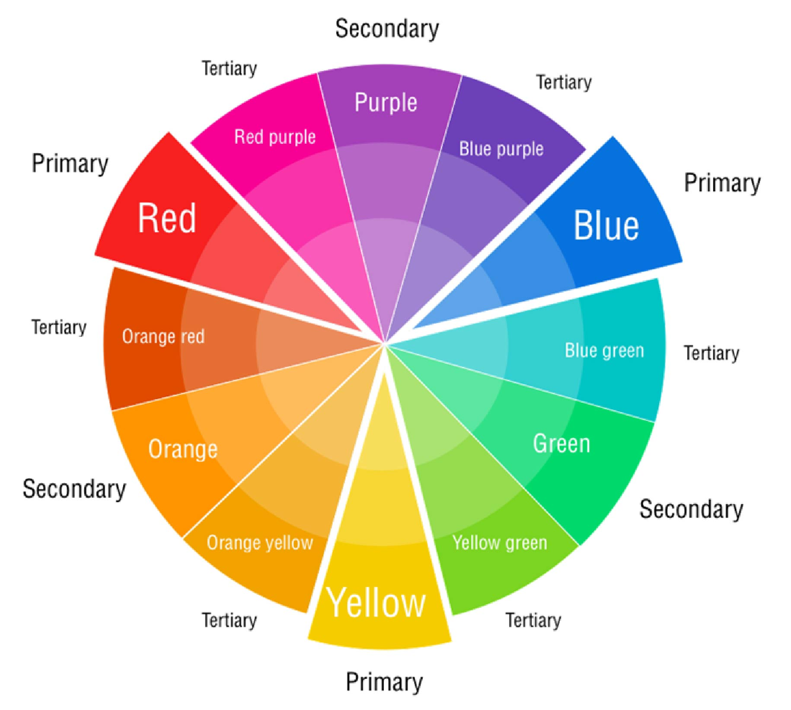

Color Theory Overview
A Brief Look into the History of Color
There are few things in design that are more subjective...or more important...
than the use of color.
In Ancient Greece, Aristotle developed the first known theory of color. Ancient color theory was primarily rooted in the concept that all colors derived from a mixture of lightness (white) and darkness (black). Aristotle connected these, along with key hues, to the four elements—earth, air, fire, and water—a framework that dominated Western thought for almost 1,800 years.
Around the 1490's, Leonardo da Vinci was the first to suggest an alternative hierarchy of color. His theory was based on observing nature, connecting colors to the four elements (white/light, yellow/earth, green/water, blue/air, red/fire, black/darkness). He was among the first to identify that complementary colors (e.g., red and green) create visual contrast and enhance each other's intensity when placed side by side.
In the 1660's Isaac Newton was the first to fully develop a theory of color based on a color wheel. He began a series of experiments with sunlight and passing light through a prism.
He identified the ROYGBIV colors (red, orange, yellow, green, blue, indigo, and violet) that make up the visible spectrum (the colors we see in a rainbow). His work led to breakthroughs in optics, physics, chemistry, perception, and the study of color in nature.
Johann Wolfgang von Goethe held that yellow and blue were primary. Newton and Goethe took very different approaches in their study of color. For Newton, color theory was something to be scientifically derived from experimentation in a lab. Goethe, on the other hand, took a more experiential and physiological approach.
The theory of primaries was widely disputed, creating a disconnect between theory and practice.
At the same time, industrialization created the standardization of color and color names to ensure consistency across products and industries.
The Color Wheel
The Color Wheel is the core of color theory, organizing colors based on relationships. It includes three main color types: primary (red, yellow, and blue), secondary (green, orange, and violet), and tertiary (a mix of primary and secondary colors). Colors naturally complement one another based on their position on the color wheel.

Color harmony
Color harmony refers to how colors are arranged to create a visually pleasing design. It's a technique that ensures colors in a palette work well together. A harmonious color combination looks good and:
- Impacts the user experience by making designs more appealing and easier to navigate
- Establishes visual hierarchy, guiding users' attention to key elements and content
- Contributes to brand recognition through consistent and complementary color choices
- Evokes a specific mood and tone, creating the desired emotional response from users
- Ensures the accessibility of a design by adhering to color contrast guidelines, making content readable for all users
Color properties
Color properties also play a significant role in color theory and how users perceive and interact with colors. Experimenting with hues, value, saturation, and temperature can change a color's appearance and even wholly change its effects on the human brain.
For example, you can use the bold, attention-grabbing nature of the color yellow to make essential elements to stand out. But when you change its value and add a white tint to create pastel yellow, it softens the shade and brings a tranquil and fresh feeling to designs.
Color psychology
Color psychology explores the emotional and psychological associations with different colors. Colors and their many hues can influence a user's mood, behavior, and perception.
For instance, dark blue evokes a sense of tranquility and reliability, and maroon has qualities that ignite feelings of confidence and stability. Referencing color psychology when building color combinations ensures you elicit the right response within designs.
Types of color combinations
You can use many color combinations to evoke emotions and create visually engaging designs. Some of the most common ones include:
- Complementary: These colors are located on opposite ends of the color wheel, creating a striking contrast when paired.
- Monochromatic: These shades include a lighter or darker version of the base color to create a consistent and subtle color palette.
- Analogous: These hues are closely related and sit next to each other on the color wheel to create a natural color scheme.
- Triadic: This combination includes three colors equally distributed around the color wheel, one used as the primary color and the others as accent shades. These types of color palettes create vibrant and eye-catching designs.
- Tetradic: This color combination includes four colors that form a square on the color wheel and are equal distances apart. Tetradic color schemes are more complex and trickier to balance but create a vivid contrast.
- Split complementary: This combination includes a base color and the two colors on either side of its direct complementary color on the color wheel. This creates a vibrant yet balanced color scheme.
Basic Color Properties & Types
- Hue: The pure color name (red, blue, yellow).
- Tint: Hue mixed with white (lighter).
- Shade: Hue mixed with black (darker).
- Tone: Hue mixed with gray (less saturated).
- Luminance/Brightness: Amount of light a color reflects.
- Saturation: The intensity or purity of a color (high = bright, low = muted).
- Value: The lightness or darkness of a color.
- Primary Colors: Red, yellow, blue (cannot be made by mixing).
- Secondary Colors: Green, orange, violet (made by mixing primaries).
- Tertiary Colors: Colors made by mixing a primary and secondary color.
- Temperature: Warm (reds, yellows) or Cool (blues, greens).
- Neutral Colors: Colors with low saturation, like gray, brown, beige, or white.